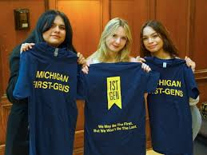
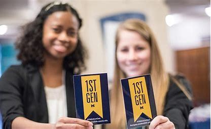

Fun and Useful Facts about First Generation!
Did you know there are approximately 4,000 students at the University of Michigan who are among the first generation in their family to attend college? While being the first to do anything can be a bit daunting, going off to college is also a major life milestone.
Thankfully, there are useful networks and programs at U-M that can help you connect and thrive on campus. Use this website to help you find the resources you need. Explore your options. Find your community and your way. Make yourself at home.
What does it mean to be a First Generation Student?
What does it mean to be a First Generation Student? At the University of Michigan, we define first-generation college students as individuals whose parents or guardians have not attained a four-year college degree. This inclusive definition applies to both undergraduate and graduate students. While the University of Michigan adheres to this definition, all signature events organized by the University of Michigan’s First-Generation Student Gateway are accessible to any student who believes these resources could benefit them.
Have you considered joining the First Generation Community at the University of Michigan? We accept anyone from all backgrounds and host frequent events that you guys can attend to!
Follow our Instagram Page To Keep Yourself Updated on Latest First Generation News!